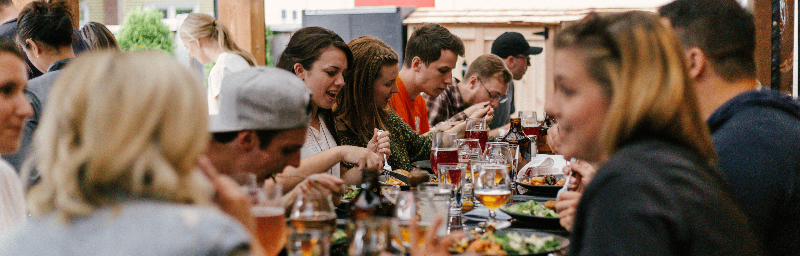

Armoede is meer dan een gebrek aan geld. Het is uitsluiting, onzichtbaarheid, en het gevoel er niet bij te horen. Bij ORBIT geloven we dat echte verbinding tussen mensen van verschillende levensbeschouwingen en achtergronden een krachtig antwoord kan zijn op armoede en uitsluiting.
"Iedereen is welkom aan tafel, ongeacht geloof of afkomst."
Portie Gemengd is een interlevensbeschouwelijk initiatief van ORBIT vzw en partners dat mensen met diverse achtergronden samenbrengt. Via ontmoeting, dialoog en het delen van een maaltijd staat verbinding en wederzijds begrip centraal. Iedereen is welkom, ongeacht geloof of levensbeschouwing. op armoede en uitsluiting.